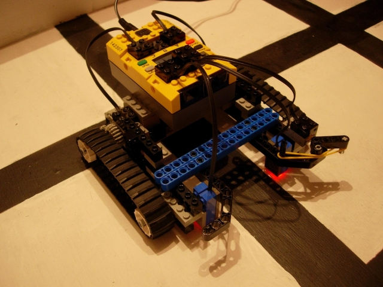
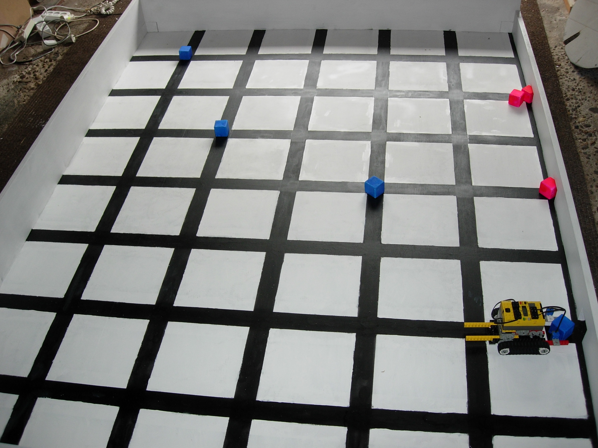
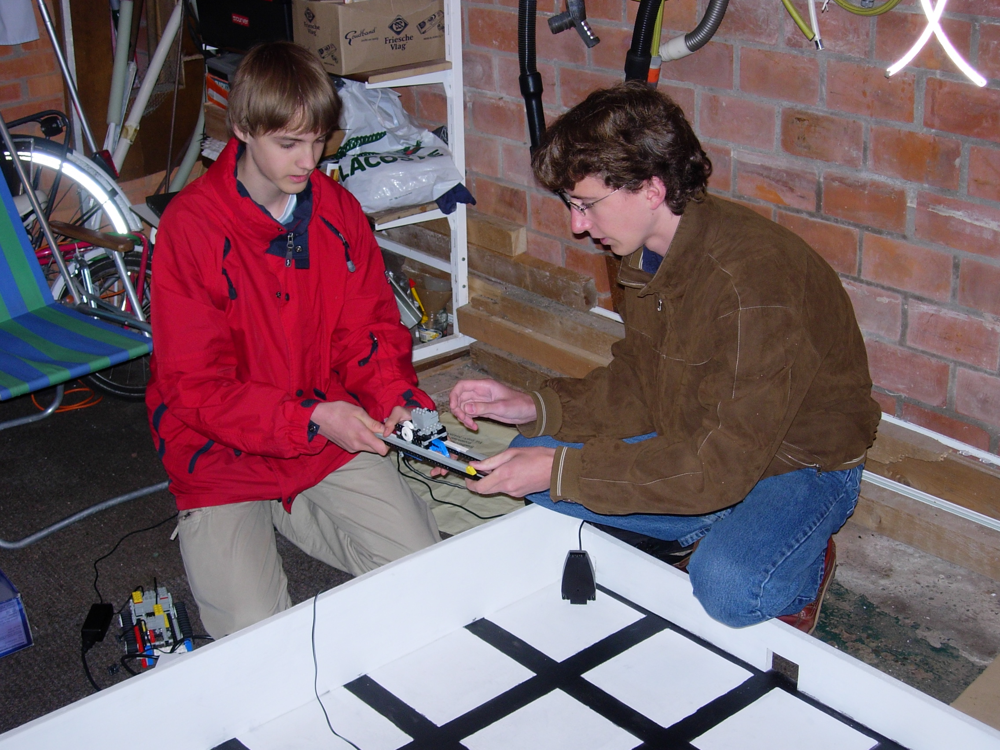
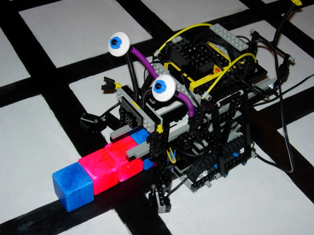
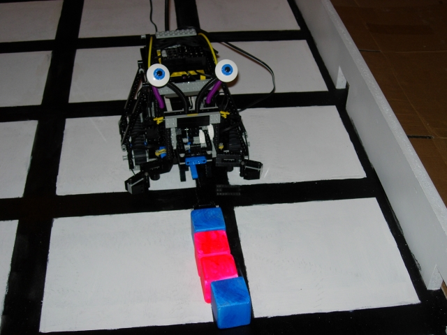
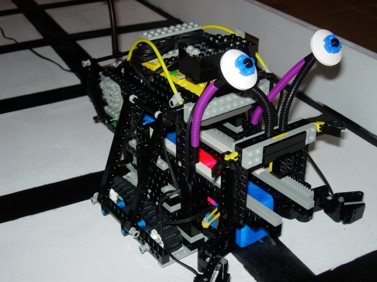
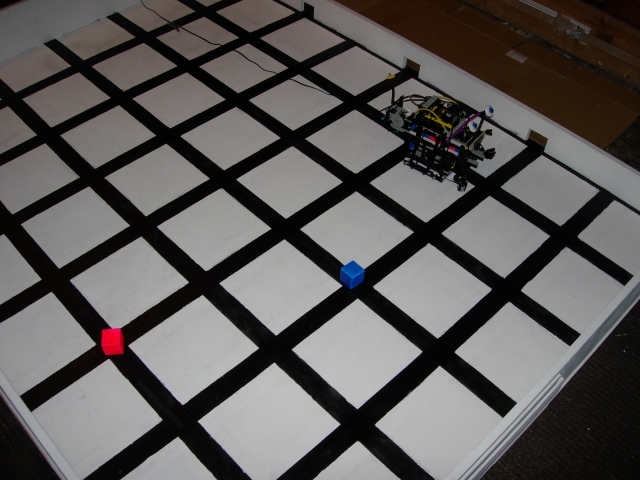
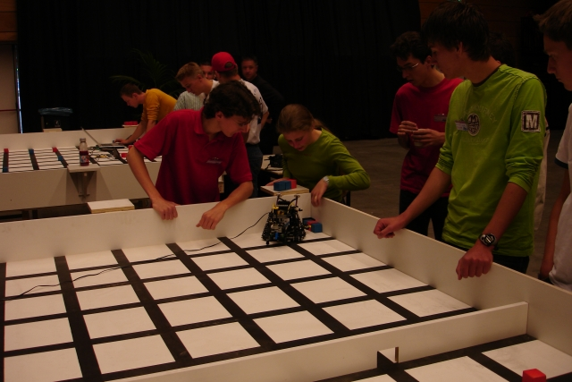

RoboChallenge Junior 2006/2007
I competed with my friend Marc van Beest in the Startel RoboChallenge Junior 2006 and 2007. We placed 1st and 3rd respectively with our robot The Lobster. We tested our robot on a replica of the course that we built at home. Marc built the hardware, and I wrote the software, in C. It was good fun.







